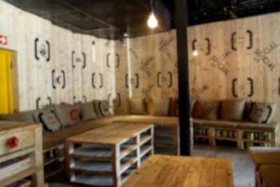
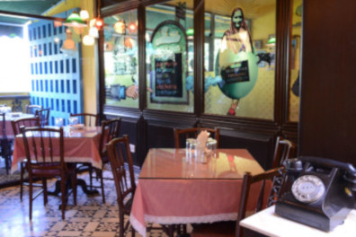
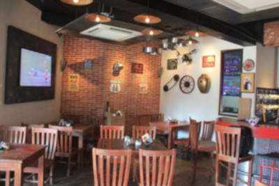
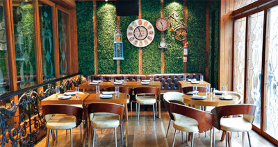
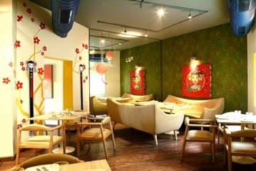
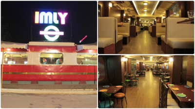
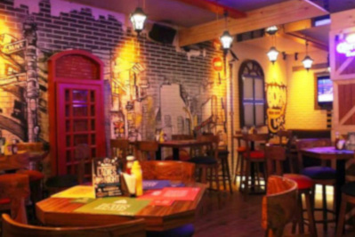
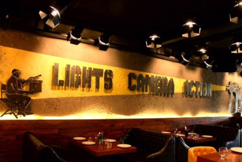
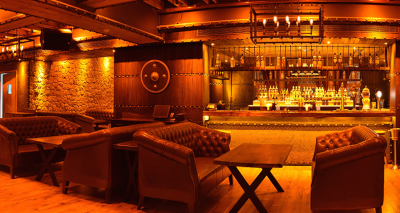
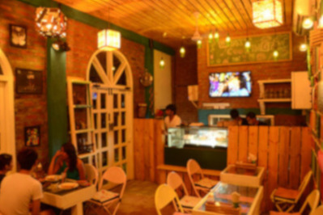

Theme Cafes
1. Social Offline Cafe

Oh, Cafe? Workplace? Or should we call it a Workbar? Well, Social is one Urban hangout with a blend of cafe & workplace that has created a kick amongst the Delhiites. Situated in Hauz Khas Village and next to Delhi Art Gallery, you will find people of different coterie at Social. Having said that, it is known for its ridiculously tasty Cocktails and Music.
2. Soda Bottle Opener Wala

It has quirky, fun and contemporary Irani Style archetype with the menu full of Parsi specialities and a hint of Bombay street food. Cafe has some of the delectable dishes like keema pav, Goan fish curry, Parsi kulfi and more. The ambience will take you back in 1950’s Parsi Culture. Its a must visit in Khan Market if you are in for some Parsi delicacies which will not burn a hole in your pockets as well.
3. The Biker’s Café

What do you need after a long ride on your bike? Fulfilling food accompanied by drinks, and Biker’s Café has everything you want. This place has the interiors which might be another home for any biker. With Harley parked in front, and Helmets hanging from the ceiling can surely make anyone fall in love with the idea of riding bikes! So kickstart your bike, full throttle and meet your fellow bikers at Biker’s Den: The Biker’s Cafe.
4. Farzi Cafe

Why Farzi? Farzi Cafe is a fusion of Global & Indian menu and ambience, yet making it a very chic and a modern style cafe. Farzi Café offers a high energy molecular gastronomic culinary style, infused with a contemporary casual dining affair. Also, try your drinks in Farzi style with Chuski margarita and more.
5. Mamagoto

This place will never fail to delight you with the fantastic Pan-Asian Menu they have! So are you up for some fun, doozie Japanese & Pan-Asian cuisine with a twist? Step in, and you will know everything from their Manga inspired communal and modish decor. The food is not authentic but some experiments done by some MAD scientist, which results in the extensive mind-blowing menu they have. Catering to the popular demand, Mamagoto has a presence in Saket, Khan Market, and Vasant Kunj. Not heavy on pocket and serving portions good enough to be shared.
6. Imly

Well, since our childhood most of us were fascinated by Trains. And what do we see now, Parked Train with Street Food served? This vegan and vegetarian restaurant puts a big smile on every street food lover’s face. Situated at Rajendra Place, the restaurant is in the shape of a train, offering delicious street food such as chatpatti chaat, Gol Gappas and more. Do book your seat in the train coach before visiting and don’t forget to sip on some Buntas.
7. Boombox Café

Boombox, what I know is a portable radio with powerful sound mainly used by Hip-Hop Dancers. And if you want to get the feel of it, then Boombox Cafe is the place! The restaurant has a hip-hop music theme that is reflected in the interiors. Metal shutters, wall graffiti, and their diverse menu give a variety of choices to its customers. Also, don’t forget to try their fruit based hookah. The Boombox Café has three outlets: in Connaught Place, Khan Market, and Rajouri Garden.
8. Lights Camera Action

“Lights, Camera, Action!”. No no, it’s not the traditional cue of a film crew, but a place to be if you are a foodie and love Bollywood. This place is to look out for if you have a craving for filmy dialogues & some Bollywood drama! A beautiful terrace lounge, the ambience goes well with the Bollywood theme along with their tailored dishes influenced by favourite Bollywood movies.The menu is cleverly designed, with dishes named after famous Bollywood dialogues and songs, giving movie buffs a tremendous filmy time! LCA is situated in Rajouri Garden as well as the Hauz Khas Village.
9. Lord of the Drinks

Have you ever travelled back in time? That is precisely the feeling you get when you enter Lord of the Drinks café. Climbing up a dimly lit staircase through a dungeon, welcomed by large wooden interiors, plush brown sofas and scrumptious bar that offers good food, and great drinks. Also, if you are looking to making some new friends and sharing your table with strangers, visit this place as it’s also known for its community table concept 😉
10. Woodbox Cafe

The Woodbox Café at Satyaniketan is filled with fashionable items, which are made out of recycled materials and elements such as glasses, CD drives, bicycle etc. Well planned and designed interiors attract the young crowd, and delicious food ranging from pasta to cakes they keep bringing back customers again and again.So its a cafe for youth which is decked out in wooden interiors, and also, where you will find liquor bottles cut into the shape of glasses.